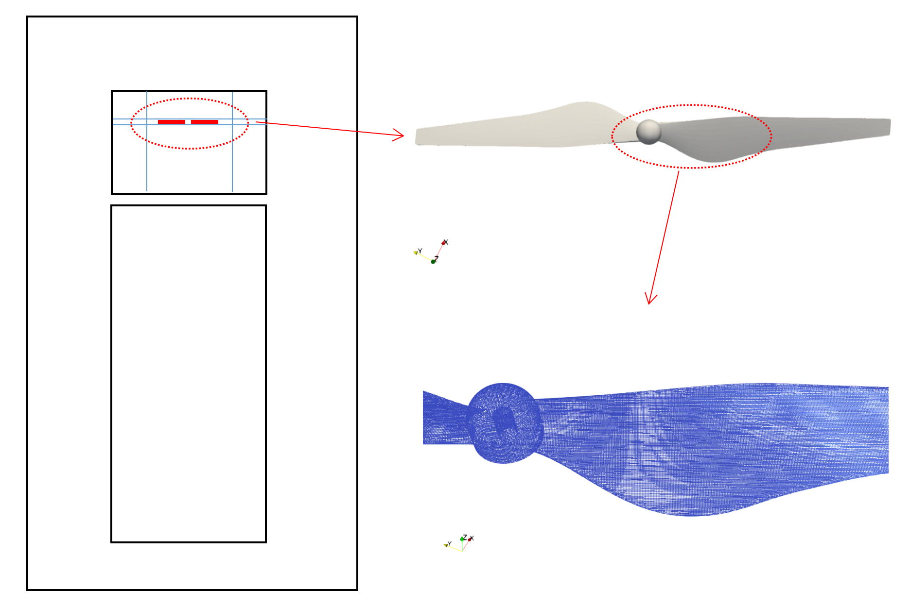
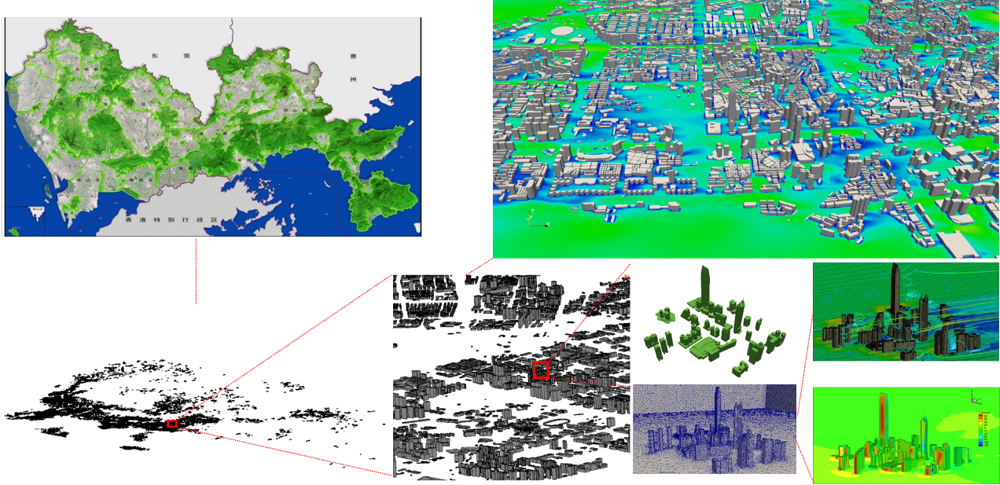

High Resolution Numerical Aerodynamic Noise Simulation of Multi-rotor Drone
Abstract
Drones have made one of the biggest shifts in today’s industry, and their usage is increasing day by day. One of the flaws we can say that today’s drones have is their buzzing noise, which can sometimes get on nerves. We aim at simulating the broad-band noise associated with both the propeller and its wake. An unsteady Reynolds Averaged Navier-Stokes simulation, combined with the Ffowcs Williams-Hawkings solver, is used to simulate the noise generated by a high speed 2- bladed propeller. We focus on understanding the physics of the aerodynamic noises and how it propagates to the near- and the far- acoustic fields, which is analyzed by computing the dilatation field, the light hill-stress terms, and each term in the integrand of FWH integral solution of the far field.
Mathematical Models
The unsteady Reynolds-averaged Navier–Stokes (uRANS)
equations are used herein for the flow simulation of drone propellers:
In the uRANS computation, the Reynolds stress term is modeled using a differential equation that approximates the effect of the turbulence length, time-scale and the shear stress transport. SST k −ω model is used as a turbulence closure model. Unlike the k − e model, the k − ω model has a disadvantage that the value of ω in the free-stream is overly sensitive.
However, the near-wall turbulence of the k−ω model is more accurately resolved than that of the k − e model. The SST k − ω model combines the advantages of the k − ω and the k− e models, which can achieve high accuracy in the analysis of the propeller. In this study, OpenFOAM was used for 3D uRANS computations for drone propellers.
The aeroacoustic computation was performed with the Farassat 1A formulation of the Ffowcs Williams-Hawkings equation using impermeable surfaces. This equation calculates the noise generated due to three mechanisms: 1) thickness noise generated by the displacement of the air due to the geometry of the blades; 2) loading noise generated by the forces exerted on the air by the propeller; and 3) quadrupole noise, which describes noise sources away from the surface of the blade such as vortex noise. The total noise is described by the addition of the thickness, loading, and quadrupole terms. The influence of quadrupole noise is generally small for subsonic propellers.
Ffowcs Williams-Hawkings equation
The thickness, 𝑝𝑇, and loading terms, 𝑝𝐿, of the Farassat 1A formulation are shown in Eq. 1 and Eq. 2, respectively.

Simulation resultsSimulation results
The simulations were run in parallel on Tianhe 2A supercomputer at the National Supercomputer Center at Guangzhou with 960 CPU cores. Some of the simulation results are followed.

Pollution Transport and Source Tracking in Urban Areas
Transport and source detection of urban pollution are very important research topics.They play essential roles in,for examples, forecasting the concentration of urban pollutants and the design of urban industry parks. With the rapid development of supercomputing technology,numerical simulation is becoming a useful tool for these problems due to its promising advantages:fast,cheap,and high flexibility.Based on the advanced technology of supercomputing,we investigate fast solution algorithms and software for the prediction and back tracking of urban pollutions.
